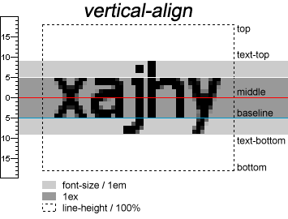

.适用于 inline 元素和 inline-block 元素
.对于文本，基线 baseline 是字母的底部；对于图像，基线通常是图像的底部
.一个容器中，有多个子元素要分别设置，如统一垂直居中 middle
.对中文影响不大
.相邻行文字的基线与基线之间的距离就是行高 line-height
.行间距 = 行高 - 字体大小
| 类别 |
说明 |
| baseline |
默认。元素放置在父元素的基线上 |
| top |
把元素的顶端与行中最高元素的顶端对齐 |
| text-top |
把元素的顶端与父元素字体的顶端对齐 |
| middle |
把此元素放置在父元素的中部 |
| text-bottom |
把元素的底端与父元素字体的底端对齐 |
| bottom |
把元素的顶端与行中最低的元素的顶端对齐 |
Iconfont的垂直对齐 - 为了避免图标大小和正文大小的不匹配导致行内错位，应指定图标样式垂直居中；图片有时也需要这样处理
img,
.iconfont {
vertical-align: middle;
}

[] 对齐
line-height: 64px;
top
text-top
middle
baseline
text-bottom
bottom
<div class="ref-box">
line-height: 64px;
<span style="vertical-align: top">top</span>
<span style="vertical-align: text-top">text-top</span>
<span style="vertical-align: middle">middle</span>
<span style="vertical-align: baseline">baseline</span>
<span style="vertical-align: text-bottom">text-bottom</span>
<span style="vertical-align: bottom">bottom</span>
</div>
.ref-box {
font-size: 32px;
line-height: 64px;
height: 100px;
background: #000;
color: #fff;
}
.ref-box span {
display: inline-block;
border: 1px solid #fff;
font-size: 16px;
line-height: 16px;
height: 20px;
}